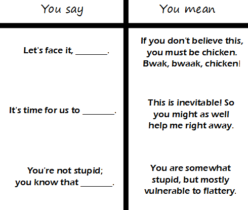

Comic JK 899
When I Feel Like It
⇤
<
?
>
⇥

⇤
<
?
>
⇥
Forum
.
RSS
.
Digg
.
Facebook
.
Reddit
.
Twitter
.
Stumbleupon
Let's face it, your mother likes dorky college boys. It's time for us to accept her for who she is. You're not stupid; you know that she's banging all your friends. poop. pee-pee reddit.com/r/comicjk Lets face it English, is a crazy language. Its thyme for us to part. Your not stupid; get the truth. > You're grammar is dick. I am commenting Because I think this comic Is worth a haiku. >>Better then yours? >>>Know they seem to, be about the same. >>>>OK what am I missing in teh OP? >>>>>ninja 'edit >>>>>> well now whats the fun in that! >>>>>>>ninja RE-edit! I win! >>>>>>>> now their grammar is even equally bad. it all makes sense now! >>>>>>>>>*they're >>>>>>>> winja? The one I'm getting sick of is people starting every response to a question with "Look, -" > Look, the one which, like, you know, really, like, makes me mad, you know, is the, like, overabusive use of the phrases, you know, "like" and, like, "you know". Look, let's, like, face it: This is just, you know, stupid. >> Yeah, right on, man. Tell it. >>> Eh? I'm in Canuckistan eh? We don't say "like", eh, we just say eh, eh? >>>>you know what I mean, right? >>>>> I know, eh? "We should stop using these. It is inevitable! So you might as well help me right away. If you don't believe this, you must be a chicken. Bwak, bwaak, chicken! You are somewhat stupid, but mostly vulnerable to flattery." Hmmm, these last two don't seem to fit together. Let's face it, this comic is not really true. The one that always gets me is "This is how it is." Really? Your perception of reality is the only valid interpretation? >This is how it is: gravity attracts... >> That is an enormous oversimplification. >>>though valid for most situations one is likely to encounter... <BUMP> >>>so, for someone who learned C++ in the late 1990's, what would be a good book or website for learning the changes and geting up-to-date with current "best practise" ? ( as opposed to one that spends 90% explaining basic programming concepts... ) >>>> +1 this question. Anybody please? >>>>> +1 >>>>>> ++1 >>>>>>>Really? Nobody? Somebody should bump this one... >>>>>>>>www.google.com/search?q=advanced+c%2B%2B+books+best+practice >>>>>>>>>[anecdote] when I was learning C++ , looking on Google would lead one to believe that the only programming books worth reading were those by Herbert Schildt... experienced C++ programmers had a very different opinion... >>>>>>>>>> So what authors would those experienced programmers suggest? >>>>>>>>>>>+1 >>>>>>>>>>>> ++1 </BUMP> <ctrl><alt><delete/> <delete/> Awwww.. are the mean box trolls making you cry? >It's the troll! BURN! what